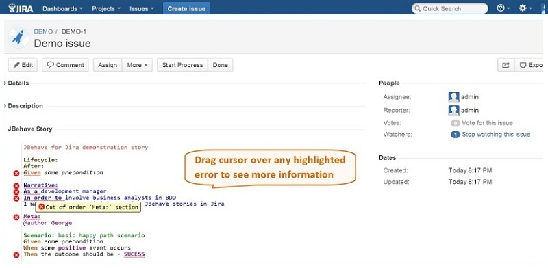
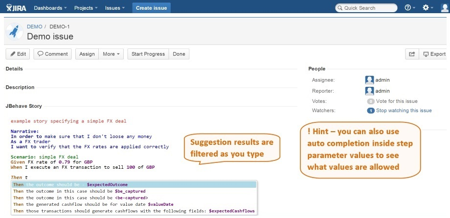
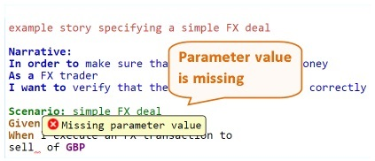
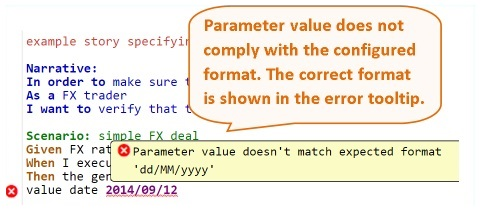

1. Story syntax validation
If you make a mistake in the story, e.g. misspell a keyword or place it in the wrong position then this will be highlighted (underscored in red) as an error enabling you to easily identify and correct it without having to run the story and then only after looking through the build log to realize that it has failed to be parsed correctly.

2. Step availability identification
When you include a step in your story that has been implemented it should be styled using a regular font and any step parameters will be marked in bold and purple color. Any new or pending steps on the other hand will be shown in italic font without any parameter markings.
3. Autocomplete support
Have you ever had to write a JBehave story outside of an IDE? Then you would know what a pain it is to actually figure our what steps are available and what step parameters are expected to be provided. Using this tool it will be a painless task - just hit 'Ctr+Space' to bring up a drop down menu containing auto complete suggestions matching your current step input. Parameters expected by the proposed steps are clearly highlighted in bold and purple font.
Hint! - auto complete feature is also available in other story sections, try using it in 'Meta' or 'Narrative' sections to give your story writing a boost.

4. Story reports directly in Jira
If you have been lacking a quick and simple way to share your story run reports with the rest of your team then you will appreciate this feature. View HTML reports produced by executing the story directly on the Jira's view issue page.
Additionally if you have more than one working environment (e.g. DEV, TEST, UAT, etc.) then you will be able to see all of the reports from these different environments on the same view issue page. Never again report a user story as complete only to find out later that it has failed in your UAT environment.

Advanced features for step parameters
Step parametrization is the essence of BDD style story writing and in order to get the most value out of it you need to be able to specify them with ease, that is why we have concentrated our efforts on implementing additional support for specifying step parameter values, both for simple and for tabular parameter types.
Features that help with this:
• Missing parameter highlight (more info)

• Automatic validation of parameter value against a set of allowed values in case provided in the step implementation (more info)
• Automatic validation of parameter value against a format specified in step implementation (more info)

• Auto complete support showing set of allowed values for a parameter if provided in the step implementation
• Auto insert table header row for tabular parameter types (more info)
• Auto completion support for tabular parameter column names
• Automatic alignment of tabular parameters as you type
• Tabular parameter rows validation for correct number fields and correct syntax like opening and closing pipe character
• Automatic validation of individual values inside tabular parameters against allowed values or format specified in step implementation and more...